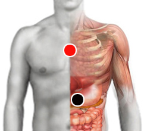

Bacteria de laboratorio (E. Coli)
Par
estómago - timo

Generalidades:
Principalmente en Europa ha aparecido una nueva cepa de la bacteria E-coli que es resistente a diversos medicamentos, aún los más potentes como la colistina. Algunos investigadores sospechan que esta bacteria ha sido creada en algún laboratorio ya que no se explica que en forma natural pueda haber alcanzado tal resistencia. La bacteria es mas peligrosa, sobre todo cuando se presenta junto con la enterobacter pneumoniae, en cuyo caso puede resultar mortal. Rastrear escrupulosamente todos los pares, de un paciente a otro se presentan cuadros muy distintos.
Síntomas:
Se pueden presentar alteraciones gástricas, principalmente diarrea, se puede confundir con Salmonella. También puede infectar vías urinarias o deprimir al sistema inmune.
En noviembre de 2015 científicos británicos y chinos detectaron en carne de cerdo por primera vez una enterobacteria resistente a varios tipos de antibióticos. Más tarde, en 2016 fue identificada en Estados Unidos una nueva cepa de E-Coli resistente a 8 antibióticos distintos, entre ellos, el más potente conocido: la colistina, que se administra como último recurso en cuadros infecciosos agudos; es decir que estamos ante una bacteria virtualmente imposible de detener. Dado que las bacterias tienen la capacidad de propagar su código genético a otras cepas y especies, esto ha puesto a los médicos y científicos en alerta máxima ya que podría ser el final de la era de los antibióticos. El ser humano quedaría indefenso ante diversos tipos de patógenos - Claro, sin considerar al par biomagnético -.
Algunos expertos sugieren que la única forma en que una bacteria puede adquirir tal resistencia es a través de una exposición a los antibióticos en forma deliberada y controlada dentro de algún laboratorio. Pero ¿cuál sería el objetivo de crear tal resistencia? Algunos piensan que es una forma de crear terror entre la población para evitar el consumo de productos cultivados por los pequeños agricultores o ganaderos y de esta forma tener un mayor control en la producción y distribución de alimentos, favoreciendo a los grandes monopolios. Eso podría explicar porque la bacteria se ha exparcido en Europa, precisamente donde hay más grupos que están en contra de los organismos transgénicos y los agrotóxicos.
Otra versión sugiere que la ingeniería genética, al tratar de crear verduras transgénicas ha tomado genes de insectos y el resultado accidental ha sido la creación de esta bacteria super resistente.
Transmisión
Se transmite principalmente por alimentos contaminados. Extremar medidas de higiene en la preparación de alimentos. Ver E-Coli.